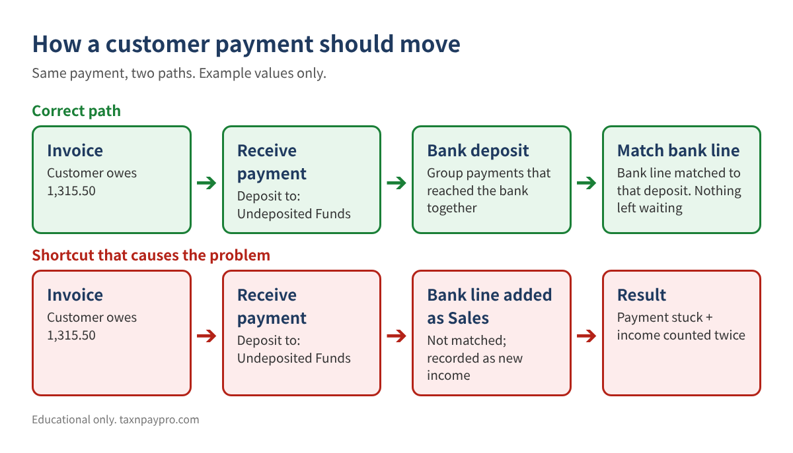
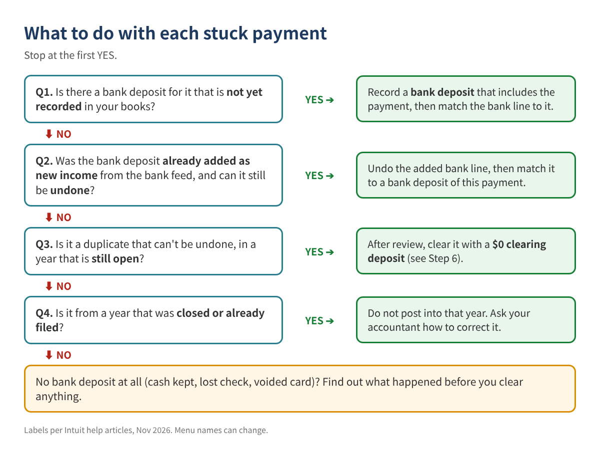
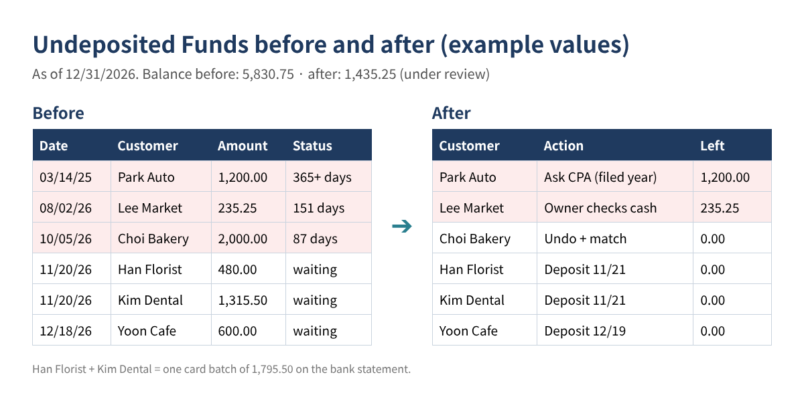

Old Payments Stuck in Undeposited Funds? A Step-by-Step Cleanup That Doesn't Double Your Income
Your Balance Sheet shows thousands of dollars in Undeposited Funds (some versions of QuickBooks call it "Payments to deposit"). Every time you open the bank deposit screen, the same old customer payments are there, some from last year. You tried a journal entry to bring the balance to zero, and the payments are still on the deposit screen.
This is one of the most common cleanup problems in small business books, and it matters for taxes: in many cases the money was deposited, but recorded a second way, so income is counted twice. This guide shows how to sort every stuck payment, prove where it went, and clear it without creating a new mess.
Who this is for: owners and bookkeepers who receive checks, cash or card payments against invoices or sales receipts, and see old items waiting in Undeposited Funds.
How Undeposited Funds is supposed to work
Undeposited Funds is a holding account. When you record a customer payment, it waits there until you record the bank deposit that groups it with the other payments that reached the bank together. Intuit's help article says payments in the account "automatically appear in the Bank Deposit window." When the deposit is recorded and the bank line is matched to it, nothing is left waiting.

Payments get stuck for a few reasons:
- The bank feed line was added as new income (for example to Sales) instead of being matched to the deposit. This is the double-income case.
- Several payments were deposited as one batch (a card settlement or a deposit slip), and nobody grouped them.
- The payment was recorded twice, or entered for the wrong customer or amount.
- Cash was never deposited: it paid expenses or stayed in the register.
- A journal entry zeroed the account, but the payments themselves were never deposited, so they still show on the deposit screen.
Step 1: List every payment still waiting
QuickBooks Online
- Go to All apps > Accounting > Chart of accounts. Find the account whose detail type is Undeposited Funds (it may have been renamed).
- Select View register and set the dates to All. Export or copy the list to a spreadsheet.
- You can also open + Create > Bank Deposit and look at the payments listed there. Don't save anything yet.
QuickBooks Desktop
- Open Lists > Chart of Accounts, right-click Undeposited Funds, and choose QuickReport.
- Set Dates to All. Select Customize Report > Filters, choose Cleared and set it to No, then OK. This shows only the payments not yet deposited.
- Export to Excel.
Put the list on a sheet named UF with columns: Date (A), Customer (B), Amount (C), Method (D).
Step 2: Age each payment
In cell H1 type your review date (for example 12/31/2026). Then add:
E: =$H$1-A2 F: =IF(E2<=30,"0-30",IF(E2<=90,"31-90",IF(E2<=365,"91-365","365+")))
Anything in "0-30" is often just waiting for this week's deposit. Older items are the real cleanup.
| Date | Customer | Amount | Days old | Bucket |
|---|---|---|---|---|
| 03/14/2025 | Park Auto | 1,200.00 | 657 | 365+ |
| 08/02/2026 | Lee Market | 235.25 | 151 | 91-365 |
| 10/05/2026 | Choi Bakery | 2,000.00 | 87 | 31-90 |
| 11/20/2026 | Han Florist | 480.00 | 41 | 31-90 |
| 11/20/2026 | Kim Dental | 1,315.50 | 41 | 31-90 |
| 12/18/2026 | Yoon Cafe | 600.00 | 13 | 0-30 |
| Total | 5,830.75 |
Table 1. Example values only, aged as of 12/31/2026. The total must equal the Undeposited Funds balance on your Balance Sheet for the same date.
Step 3: Find the bank deposit for each payment
Export the bank statement deposits to a sheet named Bank (Date in A, Amount in C). For one-payment deposits, look for the same amount within a week after the payment date:
G: =IF(COUNTIFS(Bank!$C:$C,C2,Bank!$A:$A,">="&A2,Bank!$A:$A,"<="&A2+7)>0,"Bank match","")
For batch deposits, give each bank deposit an ID in the Bank sheet (D column, e.g. DEP-1121), type that ID next to the payments you think belong to it (UF column H), and compare totals:
Bank!E: =SUMIFS(UF!$C:$C, UF!$H:$H, D2) payments assigned to this deposit Bank!F: =C2-E2 difference (should be 0.00)
In the example, the bank shows 1,795.50 on 11/21. Han Florist 480.00 + Kim Dental 1,315.50 = 1,795.50, difference 0.00. That is one deposit with two payments.
Step 4: Check if the bank deposit was already recorded another way
This is the step most people skip. Open your bank register and look at the deposits around each payment date. If the matching bank deposit is already in the register, check which account it was posted to. If it went straight to an income account (Sales, Services, Uncategorized Income), the money is in your books twice: once as the customer payment and once as new income.
In the example, the 10/06 mobile deposit of 2,000.00 was added from the bank feed as Sales, while Choi Bakery's 2,000.00 payment still waits in Undeposited Funds. Income is overstated by 2,000.00.
Step 5: Make a plan for every line
| Customer | Amount | What we found | Action |
|---|---|---|---|
| Han Florist + Kim Dental | 1,795.50 | Card batch on 11/21, not recorded | Record one bank deposit with both payments |
| Yoon Cafe | 600.00 | Bank deposit 12/19, not recorded | Record bank deposit |
| Choi Bakery | 2,000.00 | Bank line added as Sales on 10/06 | Undo the added line and match it to a deposit of this payment |
| Lee Market | 235.25 | No bank deposit (cash) | Owner confirms what the cash paid for |
| Park Auto | 1,200.00 | 2025 deposit recorded to Sales; 2025 return filed | Ask the accountant; don't post into 2025 |
Table 2. Example plan. Only the first three rows are fixed now; the rest wait for answers.

Step 6: Fix it in your books
Record the missing deposits (QuickBooks Online)
- Select + Create > Bank Deposit.
- Choose the bank Account.
- Tick only the payments that reached the bank together (Han Florist and Kim Dental).
- Check that the total equals the bank statement amount (1,795.50), then Save and close.
- In Bank transactions, match the 11/21 bank line to this deposit instead of adding it.
If the processor took a fee, Intuit's article says to enter it in Add funds to this deposit as a negative line to a bank charges account, not by editing the original payment.
Fix a bank line that was added as income
Intuit's help article on duplicate bank-feed transactions says: undo the added deposit and match it to the payment. In Bank transactions > Categorized, select the link in Added or Matched, choose Undo, record the bank deposit for the payment, and then match the bank line to that deposit.
Clear a duplicate that can't be undone (after review)
If the duplicate is old, already reconciled, or can't be undone, many accountants use a $0 clearing deposit: in + Create > Bank Deposit, tick the stuck payment, and in Add funds to this deposit enter a negative line for the same amount to the account your accountant chooses (often the income account that was counted twice). The deposit totals 0.00, so the bank balance does not change, and the payment leaves the deposit screen. Intuit's article shows negative lines in that section for fees; using one to offset a duplicate is a common cleanup method, not a separate Intuit feature, so have your accountant confirm the account and date.
A journal entry that credits Undeposited Funds changes the balance but does not remove the payments from the deposit screen. Use a deposit instead.
QuickBooks Desktop
Use Banking > Make Deposits, tick the payments in the Payments to Deposit window, and finish the deposit the same way. Negative lines go in the lower part of the Make Deposits window.
Step 7: Prove you're done
Run the Balance Sheet for your review date. Undeposited Funds should equal the total of the items still under review (1,435.25 in the example), and your bank account should still reconcile. If the bank balance moved, a deposit was recorded to the wrong account or date.

Common mistakes
- Zeroing Undeposited Funds with a journal entry. The balance looks fixed, but the payments remain on the deposit screen and get deposited again later.
- Clearing everything to one account in one entry without checking which items were real duplicates.
- Depositing payments one by one when the bank received them as a batch. The bank lines will never match.
- Posting into a filed year. It changes income on a return that is already filed.
- Turning off Undeposited Funds as the default without cleaning up first. Old items stay.
FAQ
Do QuickBooks Payments invoices go through Undeposited Funds?
Intuit's article says invoice payments processed through QuickBooks Payments are handled automatically and don't need Undeposited Funds. Card payments from other processors usually do.
Can I just delete the old payments?
Deleting a payment reopens the invoice, so the customer looks unpaid. Only delete a payment that was entered by mistake.
How old is too old?
There is no fixed rule, but anything older than one month-end close deserves a look. Anything from a closed year needs your accountant.
Will this change my taxes?
It can. Removing double-counted income lowers revenue. For a filed year, talk to your tax preparer before changing anything.
Checklist
- ☐ Exported all payments still waiting; total equals the Balance Sheet
- ☐ Each payment aged and bucketed
- ☐ Bank deposit found (single or batch) or marked "none"
- ☐ Bank register checked for deposits already posted to income
- ☐ Plan written for every line; open questions sent to the owner or CPA
- ☐ Deposits recorded, bank lines matched, duplicates undone or cleared after review
- ☐ Balance Sheet and bank reconciliation checked again
Want the workbook?
Our Undeposited Funds Cleanup Workbook (Etsy and Gumroad, English or English + Korean) ages every payment, suggests matching bank deposits, totals batch deposits, flags likely duplicate income, and builds the $0 clearing plan for review, with a 6-page guide.
This article is educational only and is not tax, legal or accounting advice; results depend on your records and no particular outcome is guaranteed. Example values are made up. Menu names can change. QuickBooks is a registered trademark of Intuit Inc.; not affiliated with or endorsed by Intuit.
Sources (checked November 2026): Intuit, "Deposit payments into the Undeposited Funds account in QuickBooks Online": https://quickbooks.intuit.com/learn-support/en-us/help-article/payroll-setup/deposit-payments-undeposited-funds-account-online/L1td0m8Z2_US_en_US · Intuit, "Record and make bank deposits in QuickBooks Online": https://quickbooks.intuit.com/learn-support/en-us/help-article/bank-deposits/record-make-bank-deposits-quickbooks-online/L2BBZOPdr_US_en_US · Intuit, "Fix duplicate transactions in QuickBooks Online bank feeds": https://quickbooks.intuit.com/learn-support/en-us/help-article/duplicate-transactions/fix-duplicate-transactions-quickbooks-online-bank-feeds/L1fjxl88f_US_en_US · Intuit, Desktop article on depositing payments from Undeposited Funds: https://quickbooks.intuit.com/learn-support/en-us/help-article/bank-deposits/deposit-payments-undeposited-funds-account-desktop/L0MPCun2P_US_en_US